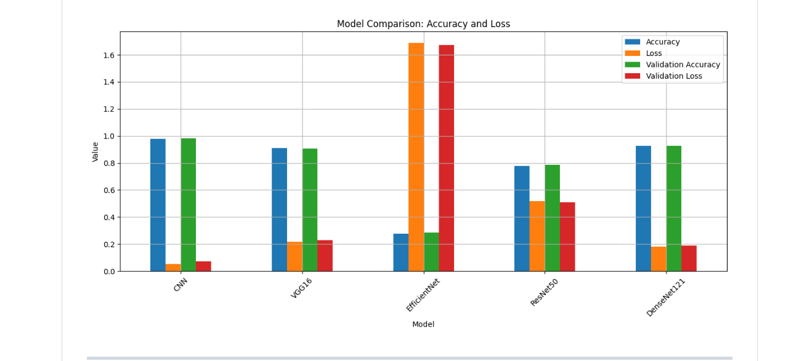

Data inspection
The dataset was extracted in Colab, its folder structure was validated, and random samples were reviewed before training.
A deep-learning study for classifying brain tumour presence and Alzheimer’s disease stages from MRI scans, with a baseline CNN compared against multiple transfer-learning architectures.
Project Brief
The project explores whether a shared image-classification workflow can distinguish both tumour and Alzheimer-related MRI categories. Rather than presenting a single model as the final solution, the work compares a compact baseline CNN with established transfer-learning networks.
The main engineering focus was building a repeatable pipeline for loading, preprocessing, balancing, training, and comparing models while keeping the notebook practical to resume in Google Colab.
Dataset
Targeted augmentation was applied to the tumor_no class to reduce imbalance without unnecessarily expanding every class.
Method
The dataset was extracted in Colab, its folder structure was validated, and random samples were reviewed before training.
Images were resized to either 64×64 or 96×96 depending on the model, normalised to the 0–1 range, and label-encoded.
A stratified 80/20 train-test split preserved class proportions across the experimental sets.
Training duration, accuracy, and loss behaviour were recorded to compare model quality and computational cost.
Model Comparison
| Model | Role in the study |
|---|---|
| Baseline CNN | Provides a task-specific reference trained directly on the MRI dataset. |
| VGG16 | Tests a deep, established convolutional architecture through transfer learning. |
| EfficientNetB0 | Examines a parameter-efficient architecture with balanced scaling. |
| ResNet50 | Evaluates residual connections for deeper feature extraction. |
| DenseNet121 | Tests dense feature reuse for medical-image representation. |

Evaluation
The current implementation records training time and produces accuracy and loss curves for model-level comparison. Class distributions are also visualised to make imbalance visible before training.
Confusion matrices and full classification reports are identified as the next evaluation step. Until those results are added, the project should be read as a comparative training pipeline rather than a clinically validated diagnostic system.
Engineering Notes
Saved .h5 and .keras models allow experiments to continue without repeating expensive training runs.
The preprocessing stage supports 64×64 and 96×96 images so that different architectures can be evaluated consistently.
The system is intended for learning and experimentation. It is not a medical device and should not be used for diagnosis or treatment decisions.
Project Link